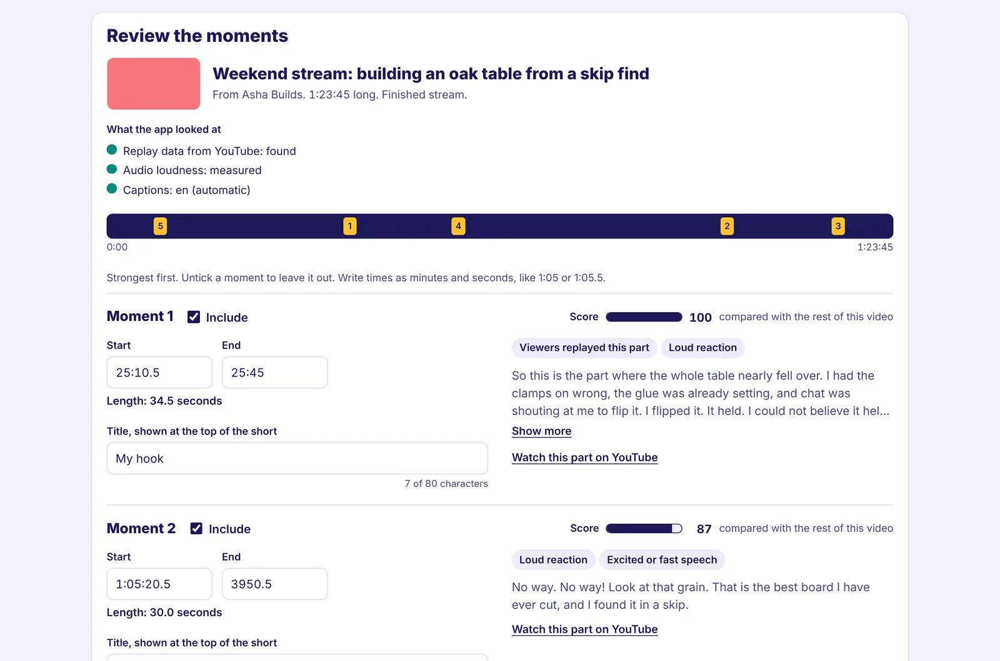
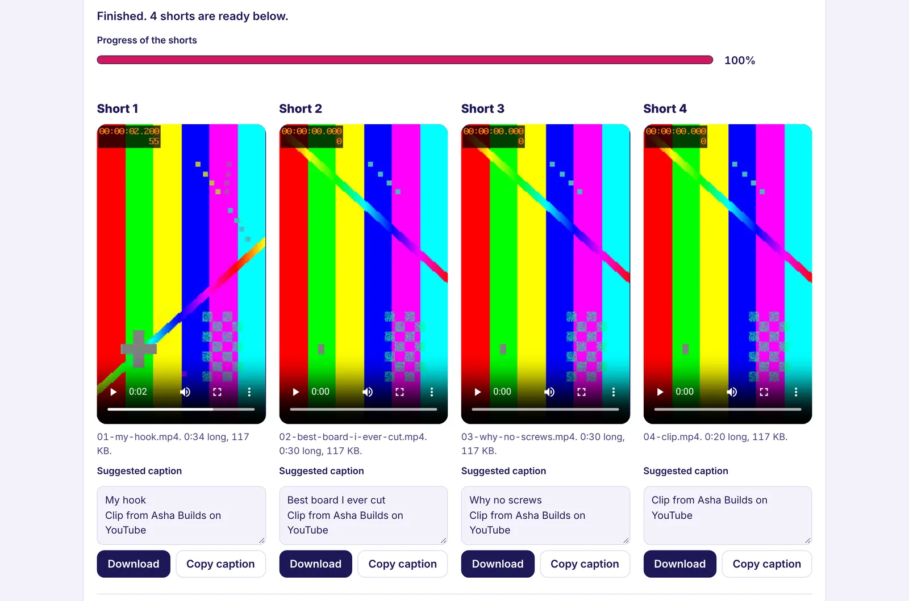

Turn a long video into shorts worth watching
Dost Clip Studio is a free app for your own computer. Paste a YouTube link or choose a video file, review the moments it suggests, and download vertical shorts with captions.
One stream of an hour and a half, five moments, five shorts. The numbers are the order of strength, not the order in the video.
How it works
-
Paste a link or choose a file
A YouTube video, a finished stream, or a video file from your computer. You confirm that the video is yours or that you have permission to clip it.
-
Review the moments
The app reads YouTube's replay data, how loud the audio gets and the captions. It lists the strongest moments with a score and the reasons, and you change the start, the end and the title.
-
Download the shorts
Each clip becomes a 1080x1920 video with captions, the spoken word highlighted, and suggested post text with a credit line for the source channel.


What it will not do
Post for you
There is no posting, scheduling or bulk clipping. You download the clips and post them yourself.
Make a clip popular
It finds moments that are more likely to hold attention. What happens after you post is not something a tool can decide.
Decide what you may use
Clip your own videos, or videos you have permission to clip. Platforms hold back accounts that repost other people's work, with or without a credit line.
Start it on your computer
- Download the ZIP and unpack it, or clone the repository.
- On Windows, double-click
start.bat. On macOS or Linux, run./start.shin the project folder. - The app opens in your browser at
http://127.0.0.1:5180. Keep the terminal window open while you use it.
What you need
- Windows 10 or 11, macOS, or Linux
- Python 3.11 or newer
- An internet connection for the first start and for YouTube links
The first start installs yt-dlp, ffmpeg and Deno as Python packages. You do not install them yourself.
How it is built
- A local web server written with the Python standard library
- yt-dlp for reading and downloading, ffmpeg for cutting and rendering
- Tests run on Ubuntu and Windows with Python 3.11, 3.13 and 3.14
- The server listens only on your computer and checks every request's origin